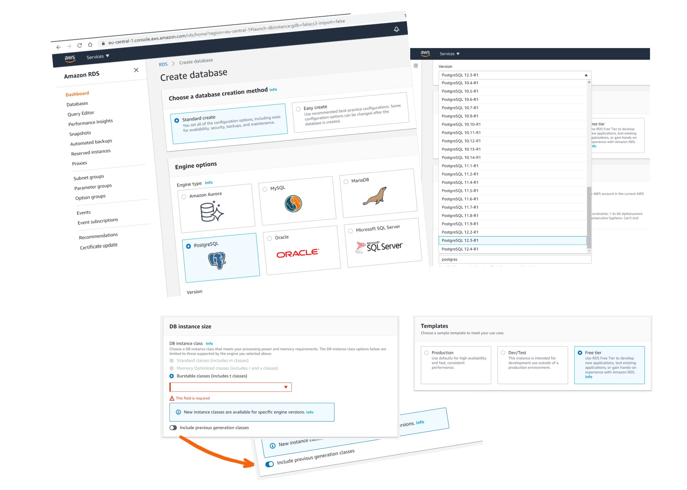
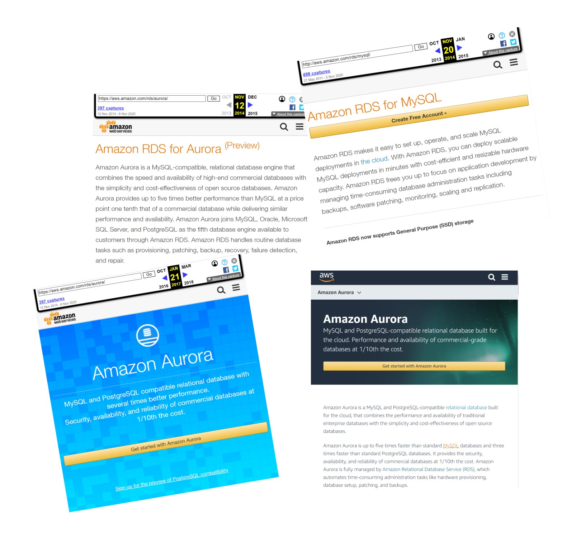

This was first published on https://www.dbi-services.com/blog/postgresql-in-aws-clearing-the-doubts/ (2020-11-09)
Republishing here for new followers. The content is related to the versions available at the publication date.
.
I’ve heard and read people saying that the PostgreSQL managed service is not the true open-source PostgreSQL from the community.
This is wrong and I’m writing this post to clarify it.
Obviously, you can install PostgreSQL on an EC2 instance, as a database running on IaaS (Infrastructure as a Service). You have the full choice of version, you can even compile it from sources, and add whatever extensions you want. This has the lowest cost because PostgreSQL is free of any subscription. But you need to do all the “Ops” work (so the TCO may be higher than what you think). Please take care of your backups if you do that. There’s a trend to build microservices with the database embedded with the stateless application and people forget that the database is a stateful component (we called that persistent 15 years ago, or durable 30 years ago) that cannot be stopped and started elsewhere. But if you consider cloud as a hosting solution, installing PostgreSQL in EC2 + EBS is a valid solution. There are no doubts about this: you run the community postgres.
Here is where I’ve heard some wrong messages, so let’s be clear: Amazon RDS for PostgreSQL is running the real PostgreSQL, compiled from the postgres community sources. RDS is the family name for all managed relational databases and this includes Open Source databases (PostgreSQL, MySQL, MariaDB), some commercial databases (Oracle Database, Microsoft SQL Server), and Amazon Aurora (I will talk about it later). Here is how you create a PostgreSQL database in RDS: you select “PostgreSQL” with the PostgreSQL logo and can choose mostly any supported version (at the time of writing this: any minor version between 9.5.2 to 12.4): 
There is no ambiguity there: only one service has the PostgreSQL name and logo. You cannot mistakenly select Aurora here. If you create an Amazon RDS PostgreSQL service, you have the “real” PostgreSQL. And you can even do that on the Free tier.
You can check the version and compilation:
$ PGHOST=database-1.ce5fwv4akhjp.eu-central-1.rds.amazonaws.com PGPORT=5432 PGPASSWORD=postgres psql -U postgres
psql (12.4)
SSL connection (protocol: TLSv1.2, cipher: ECDHE-RSA-AES256-GCM-SHA384, bits: 256, compression: off)
Type "help" for help.
postgres=> select version();
version
--------------------------------------------------------------------------------------------------------
PostgreSQL 12.4 on x86_64-pc-linux-gnu, compiled by gcc (GCC) 4.8.3 20140911 (Red Hat 4.8.3-9), 64-bit
(1 row)
The only difference in the features is that, as it is a managed database, you don’t have all privileges:
postgres=> \du
List of roles
Role name | Attributes | Member of
-----------------+------------------------------------------------------------+---------------------------------------------------
postgres | Create role, Create DB +| {rds_superuser}
| Password valid until infinity |
rds_ad | Cannot login | {}
rds_iam | Cannot login | {}
rds_password | Cannot login | {}
rds_replication | Cannot login | {}
rds_superuser | Cannot login | {pg_monitor,pg_signal_backend,rds_replication,rds_password}
rdsadmin | Superuser, Create role, Create DB, Replication, Bypass RLS+| {}
| Password valid until infinity |
rdsrepladmin | No inheritance, Cannot login, Replication | {}
postgres=> select * from pg_hba_file_rules;
line_number | type | database | user_name | address | netmask | auth_method | options | error
-------------+-------+---------------+------------+----------+---------+-------------+---------+-------
4 | local | {all} | {all} | | | md5 | |
10 | host | {all} | {rdsadmin} | samehost | | md5 | |
11 | host | {all} | {rdsadmin} | 0.0.0.0 | 0.0.0.0 | reject | |
12 | host | {rdsadmin} | {all} | all | | reject | |
13 | host | {all} | {all} | 0.0.0.0 | 0.0.0.0 | md5 | |
14 | host | {replication} | {all} | samehost | | md5 | |
But this is exactly the same as a PostgreSQL installed from the community sources where you are not the superuser.
There are a few additional RDS specific libraries (which are not open source):
postgres=> show shared_preload_libraries;
shared_preload_libraries
-----------------------------
rdsutils,pg_stat_statements
postgres=> select name,setting from pg_settings where name like 'rds.%';
name | setting
----------------------------------------+------------------------------------------------------------------------
rds.extensions | address_standardizer, address_standardizer_data_us, amcheck, aws_commons, aws_s3, bloom, btree_gin, btree_gist, citext, cube, dblink, dict_int, dict_xsyn, earthdistance, fuzzystrmatch, hll, hstore, hstore_plperl, intagg, intarray, ip4r, isn, jsonb_plperl, log_fdw, ltree, orafce, pageinspect, pgaudit, pgcrypto, pglogical, pgrouting, pgrowlocks, pgstattuple, pgtap, pg_buffercache, pg_freespacemap, pg_hint_plan, pg_prewarm, pg_proctab, pg_repack, pg_similarity, pg_stat_statements, pg_transport, pg_trgm, pg_visibility, plcoffee, plls, plperl, plpgsql, plprofiler, pltcl, plv8, postgis, postgis_tiger_geocoder, postgis_raster, postgis_topology, postgres_fdw, prefix, rdkit, sslinfo, tablefunc, test_parser, tsm_system_rows, tsm_system_time, unaccent, uuid-ossp
rds.force_admin_logging_level | disabled
rds.force_autovacuum_logging_level | info
rds.internal_databases | rdsadmin,template0
rds.logical_replication | off
rds.rds_superuser_reserved_connections | 2
rds.restrict_logical_slot_creation | off
rds.restrict_password_commands | off
rds.superuser_variables | session_replication_role
rds.tablespace_path_prefix | /rdsdbdata/db/base/tablespace
This is still the community edition that allows extensibility.
There are also some additional functionalities, like RDS Performance Insights to show the database activity with a time x-axis and active session y-axis, drilling down to wait events.
By curiosity I’ve run the regression tests that are provided by the PostgreSQL distribution:
PGHOST=database-1.ce5fwv4akhjp.eu-central-1.rds.amazonaws.com PGPORT=5432 PGPASSWORD=postgres psql -U postgres -c "select version();"
cd /var/tmp
git clone --branch REL_12_STABLE https://github.com/postgres/postgres.git
cd postgres
./configure
cd src/test/regress
export PGHOST=database-1.ce5fwv4akhjp.eu-central-1.rds.amazonaws.com
export PGPORT=5432
export PGPASSWORD=postgres
export PGUSER=postgres
make installcheck
It starts by setting some parameters, which fails for missing privileges:
============== dropping database "regression" ==============
DROP DATABASE
============== creating database "regression" ==============
CREATE DATABASE
ERROR: permission denied to set parameter "lc_messages"
command failed: "/usr/local/pgsql/bin/psql" -X -c "ALTER DATABASE \"regression\" SET lc_messages TO 'C';ALTER DATABASE \"regression\" SET lc_m
onetary TO 'C';ALTER DATABASE \"regression\" SET lc_numeric TO 'C';ALTER DATABASE \"regression\" SET lc_time TO 'C';ALTER DATABASE \"regressio
n\" SET bytea_output TO 'hex';ALTER DATABASE \"regression\" SET timezone_abbreviations TO 'Default';" "regression"
make: *** [installcheck] Error 2
In a managed database, the cloud provider needs to lockdown some administration commands in order to secure his platform, but we have the possibility to define those parameters by creating a parameter group. This is what I did in the console, and then removed those ALTER DATABASE from pg_regress.c:
sed -ie 's/"ALTER DATABASE/--&/' pg_regress.c
Then, I’m ready to run the regression tests:
[opc@a regress]$ make installcheck
...
../../../src/test/regress/pg_regress --inputdir=. --bindir='/usr/local/pgsql/bin' --dlpath=. --max-concurrent-tests=20 --schedule=./serial_schedule
(using postmaster on database-1.ce5fwv4akhjp.eu-central-1.rds.amazonaws.com, port 5432)
============== dropping database "regression" ==============
DROP DATABASE
============== creating database "regression" ==============
CREATE DATABASE
============== running regression test queries ==============
test tablespace ... FAILED 1406 ms
test boolean ... ok 684 ms
test char ... ok 209 ms
test name ... ok 311 ms
test varchar ... ok 201 ms
test text ... ok 549 ms
test int2 ... ok 354 ms
test int4 ... ok 580 ms
test int8 ... ok 954 ms
test oid ... ok 222 ms
test float4 ... FAILED 660 ms
test float8 ... FAILED 1136 ms
test bit ... ok 1751 ms
test numeric ... ok 5388 ms
...
test hash_part ... ok 240 ms
test indexing ... FAILED 6406 ms
test partition_aggregate ... ok 1569 ms
test partition_info ... ok 620 ms
test event_trigger ... FAILED 1237 ms
test fast_default ... ok 1990 ms
test stats ... FAILED 643 ms
======================================================
90 of 194 tests failed, 1 of these failures ignored.
======================================================
The differences that caused some tests to fail can be viewed in the
file "/var/tmp/postgres/src/test/regress/regression.diffs". A copy of the test summary that you see
above is saved in the file "/var/tmp/postgres/src/test/regress/regression.out".
There are multiple tests that fail because of missing privileges. Actually, pg_regression expects to have all privileges. Using pg_regress is not a good idea for testing that the RDS PostgreSQL behaves like expected. It is not made for functional tests.
This is where the confusion comes from. Aurora is a proprietary database built by Amazon. They started it by forking MySQL and modifying the storage layer in order to build a cloud-native database. Rather than storing the database files in EBS block storage attached to the database node where the instance is running, like all other RDS databases, the database service is split into separate (micro)services for the compute (EC2) and the storage (distributed over multiple AZ to provide High Availability, similar to the DynamoDB storage). Aurora code is not open-source and is very different from the community MySQL. More and more because of many improvements. Part of it is running on EC2 to parse, optimize and execute SQL statements and transactions, and update the buffers in cache. And part of it runs in the storage server which receives the redo to apply it on the data file blocks, which are distributed and shared with reader instances. This was in 2014 and Amazon always presented Aurora as another database engine in RDS. I’ve copy-pasted below a few archive.org snapshot of the https://aws.amazon.com/rds/ page if you want to look at the history. Amazon modified a lot the lower layers of the code but kept the upper layer to stay compatible with MySQL (version 5) in order to ease the application migration to Aurora. And this is how it is presented: Aurora is a new database with MySQL compatibility. Once you select the Aurora service in RDS, you can choose the version which mentions with MySQL version it is compatible with. For example, the latest version Aurora 2.09.. is labelled “Aurora (MySQL 5.7)”. Note that there are not only modification to adapt to the cloud native storage, but Amazon brings also some interesting improvement, unfortunately not given back to the open-source community.
Here are the screenshots from archive.org where you see from the begining that RDS for Aurora is different than RDS for MySQL. And when MySQL or PostgreSQL is mentioned with Aurora there’s always the “compatible” mention: 
What I mean by this is that, in my opinion, there was no ambiguity from Amazon about what is the open-source database and what is their proprietary engine.
That’s a long story about the MySQL compatible Aurora because it was the only compatible API from 2014 to 2017. Then, as they had a strong storage engine, and a well layered code, they have built another flavor of Aurora taking the PostgreSQL upper layer to replace the MySQL one in Aurora. Then they have two proprietary databases: Aurora with MySQL compatibility and Aurora with PostgreSQL compatibility. As far as I know it has always been clear that it is only “compatibility” and Aurora has never been advertised to be a real PostgreSQL engine. They have RDS PostgreSQL for that. And I think they have different use cases. Aurora is probably the best choice when High Availability, scalability and elasticity is the most important. PostgreSQL may provide lower latency on block storage, and is probably cheaper (but Aurora serverless can also reduce the cost for rarely used databases).
However, there is still some confusion and some Aurora users are asking the PostgreSQL community for help. The PostgreSQL community helps a lot their users because they know the engine (which is very well documented, and source code and source comments are accessible). But they cannot do anything for Aurora as we don’t even know what has been modified. As an example, I mentioned in a previous post that some wait events are specific au Aurora – don’t ask the postgres mailing lists for that. I also think that the PostgreSQL community would appreciate that the improvements made by Amazon on the PostgreSQL code are shared with the community.
Not only is Amazon RDS PostgreSQL the real PostgreSQL from the community, but it is also in my opinion one of the most advanced managed service for it.
.
Talking about backups, Amazon RDS PostgreSQL has all features to avoid or recover from mistakes, which I listed in a 5-points tweet:
5 critical features of managed DB services@awscloud RDS PostgreSQL checks all five 👍
1/5⌚✅be able to recover to a point-in-time beyond the last backup (any point-in-time within the retention) pic.twitter.com/s0siA3RKJC
— Franck Pachot (@FranckPachot) November 8, 2020
{kind=link}
{kind=link}